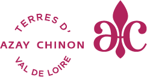

Qui sui-je
Rien de bien palpitant, je suis Audrey 39 ans, j'habite dans un petit village nommé Huismes, on dit pas les s ni le e mais je trouve Huissmeuss bien plus marrant. C'est du coté de Chinon, la Rabelaisie tout ça tout ça...
D'où je viens

Je suis dans le monde du Tourisme depuis un peu plus de 10ans, en Office de Tourisme.
L'accueil est notre mission principale mais nous avons aussi une mission complémentaire, la mienne, Webmaster du site de l'Office de Tourisme Azay Chinon Val de Loire.
Je me suis autoformée sur la plupart des outils que je connais et utilise. J'ai toujours été passionnée par l'univers du web et son fonctionnement.
une phrase supplémentaire
paragraphe bis
Où je vais
Besoin d'un nouveau défis pour changer de vie et me prouver que j'en suis capable. Mon intérêt s'est tournée vers la formation de concepteur/ develloppeur d'application.
Si je devais lister 3 qualités (la question que je deteste lol)
- Passionnée
- Empathique
- Déterminée voir butée..
Le programme, si tout se passe Bien
- Rentrer en formation 🎒
- Ne pas être larguée et réussir 🤓
- Profiter du stage en entreprise pour créer du réseau 🤝
- Obtenir le dipôme 🎉
- Trouver un boulot 🕵🏻♀️
- Profiter de cette nouvelle vie 😎